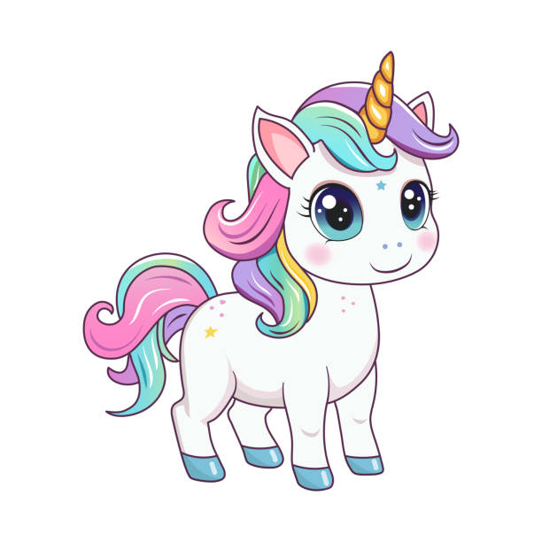
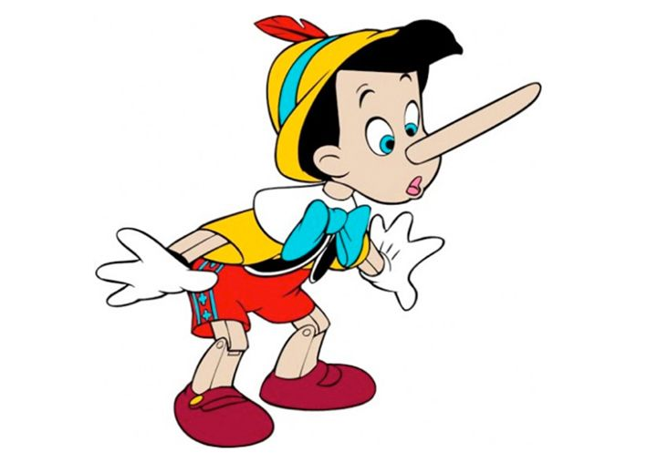
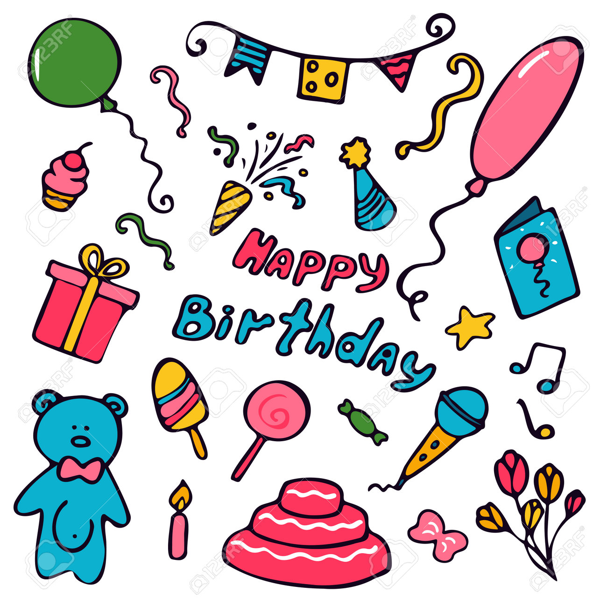
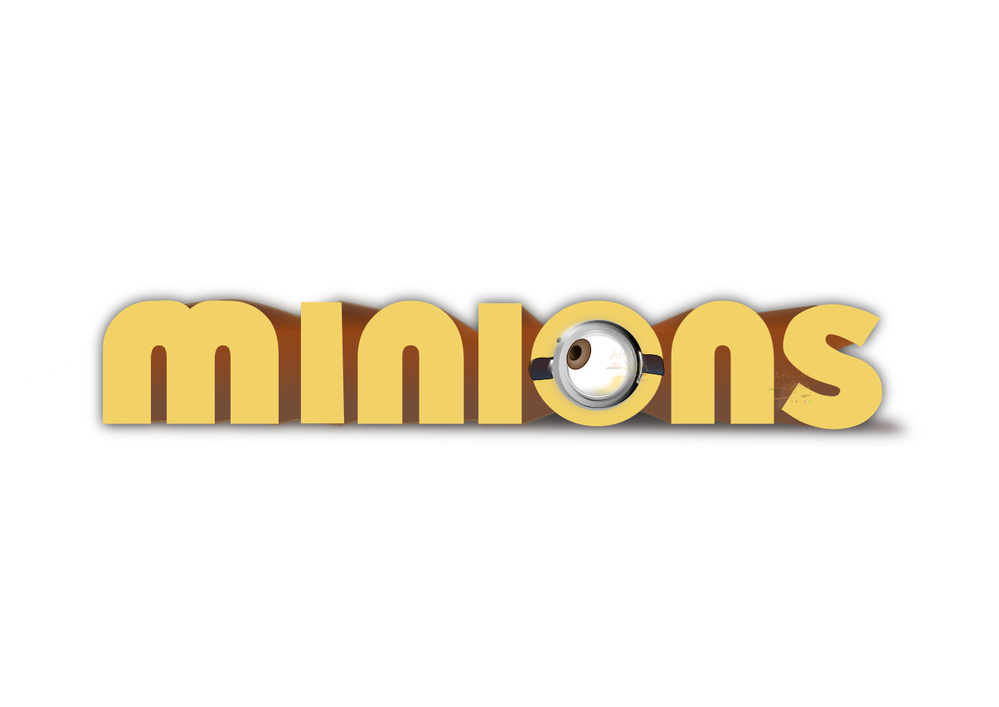

¡Es tan blandito que me quiero morir! Lo gané en la feria y es lo más asombroso del mundo entero.
Materiales: Algodón, Suavidad, Purpurina.
Ver Video
Papá Gru quería que mintiera sobre mi nombre, pero me daba miedo que me creciera la nariz como a él. ¡Soy muy adorable para eso!
Materiales: Honestidad, Muchos nervios.
Ver prueba
¡Vino un unicornio (bueno, era un caballo con un cono), y los Minions hicieron un desastre genial!
Materiales: Dulces, Gritos, ¡Mucho confeti!, y muchisimos regalos.
¡A celebrar!
Son redonditos, hablan raro y huelen un poco a banana, ¡pero los quiero mucho porque siempre juegan conmigo!
Materiales: Bananas, Travesuras y idioma un tanto extraño.
Ver a los locos